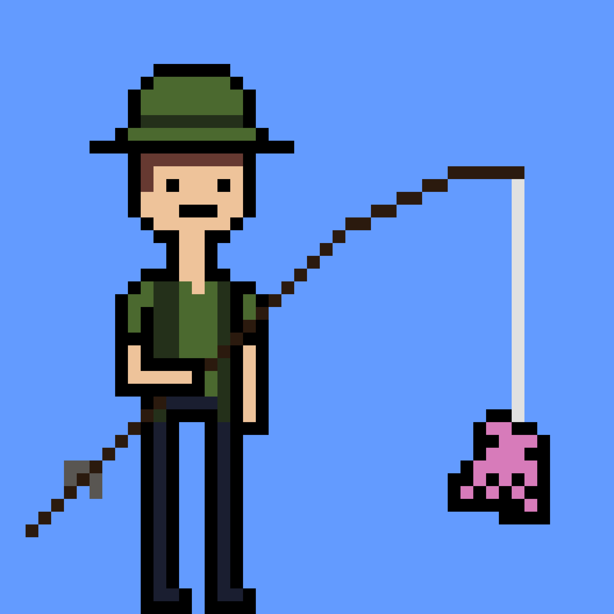

STORY
888 small, soft-bodied, eight-limbed, mollusks were happily swimming around the big blue Solana ocean until they were run out of their homes by their predators, The Fishermen. They now seek refuge wherever they can, which is usually in un-safe territories. By minting a Social Octopus, you will give them a safe home in your Solana wallet, where they will hopefully stay for the rest of their lives.